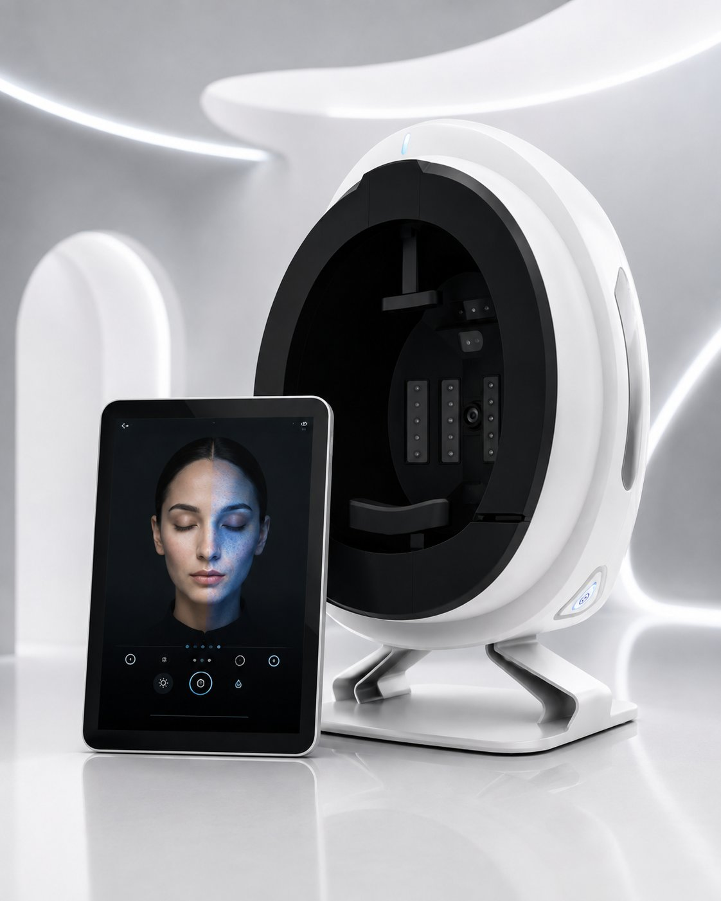

No distribuimos equipos. Construimos clínicas.
La decisión más importante no es qué equipo comprar. Es con quién trabajas antes, durante y después de cada inversión tecnológica.
*Estimación de referencia basada en la metodología VÉA; el resultado real depende de cada clínica. Ver metodología más abajo.
La mayoría desaparece después de la entrega. VÉA comienza ahí.
Distribuidor típico
VÉA Medical · Clinical Technology Partner

Antes de vender, entendemos.
"La mayoría de los distribuidores te muestran el catálogo antes de conocer tu clínica."
Antes de recomendarte cualquier equipo, nos sentamos contigo. Analizamos tu clínica, tu mercado, tus pacientes y tus objetivos — porque la tecnología incorrecta puede ser el error más costoso del sector.
- Perfil de pacientes y necesidades reales
- Servicios actuales y oportunidades de crecimiento
- Competencia, mercado y diferenciación
- Objetivos clínicos y financieros claros
La tecnología correcta. No la más cara.
"Muchas clínicas compran equipos que no se adaptan a su perfil de pacientes, su flujo de trabajo o su capacidad real de inversión."
Cada tecnología en el portafolio VÉA pasa por tres filtros antes de ser recomendada: evidencia clínica comprobada, seguridad y eficacia certificadas, y un retorno de inversión que se puede proyectar y rastrear.
- VÉA Intelligence — Scanner facial IA · 17 análisis · mayor conversión en primera consulta
- VÉA Skin — Drug delivery 2 en 1 · microchip + aguja · tratamientos más rápidos
- VÉA Pigment — Plataforma Nd:YAG · corrección de pigmentos, tatuajes y Carbon Peel

Tu equipo trata con confianza desde el día 1.
"La mayoría de los distribuidores mandan un PDF y llaman a eso capacitación."
- Fundamentos clínicos — parámetros, contraindicaciones y selección de pacientes
- Práctica con pacientes reales — tratamientos supervisados antes de operar de forma independiente
- Protocolos exclusivos VÉA — guías, precios sugeridos, consentimientos y flujo de consulta
- Certificación y acceso permanente — certificado oficial + actualizaciones on-demand

No hablamos de potencial. Medimos resultados.
"La mayoría de los distribuidores no saben cuánto gana tu clínica con el equipo que te vendieron."
Con VÉA, cada inversión tiene un retorno proyectado y un plan de seguimiento. Medimos, analizamos y optimizamos los resultados económicos y clínicos de forma continua — para que el ROI no sea una esperanza sino un plan.
- +30–60% aumento en ingresos por servicios estratégicos activados con la metodología VÉA
- +25–45% ticket promedio por paciente, con diagnóstico + plan personalizado en cada consulta
- +40% en retención y fidelización, gracias al seguimiento clínico y protocolos continuos
Proyecta el retorno de una tecnología.
Esta calculadora ofrece una referencia inicial para visualizar cómo el precio por tratamiento, el volumen mensual y los costos variables influyen en el tiempo estimado de recuperación de la inversión.
Referencia orientativa, no constituye una garantía financiera. El resultado real depende de demanda, gastos fijos, financiamiento, impuestos, capacidad operativa y ejecución comercial.
Impacto desde el primer día. No desde el primer mes.
"La mayoría de los equipos se instalan y el equipo tiene que descubrir solo cómo empezar a cobrar."
- Estrategia de comunicación personalizada — adaptada al perfil de tu clínica y tu mercado local
- Materiales y contenidos profesionales — listos para publicar, imprimir y mostrar desde el día uno
- Acompañamiento en las primeras ventas — para que el equipo cierre con confianza y consistencia

Después de la entrega comienza nuestro trabajo más importante.
"La mayoría de los distribuidores no saben ni en qué clínica está el equipo que vendieron hace 6 meses."
- Seguimiento de ROI y resultados clínicos — revisamos indicadores de rentabilidad contigo de forma periódica
- Ajuste de protocolos y estrategias — lo que funciona bien se optimiza; lo que no, se corrige a tiempo
- Soporte técnico permanente y directo — sin call centers, sin scripts
- Nuevas oportunidades de crecimiento — identificamos cuándo y cómo dar el siguiente paso contigo
Nuestro trabajo no termina con una venta. Comienza con ella.
La confianza para tomar la decisión correcta.
Habla con un Clinical Technology Partner y descubre si VÉA Medical es el aliado que tu clínica necesita para crecer con tecnología, metodología y acompañamiento real.
Sin compromiso · Respuesta en 24h · info@veamedical.com